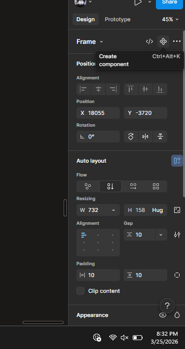
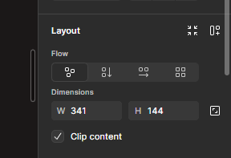
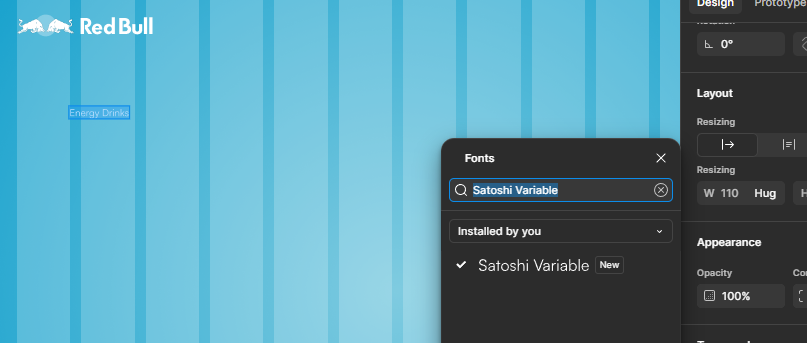

Module Overview
A structured journey through Figma — from interface basics and vector tools to components, Auto Layout, responsive design, and building a real-world Red Bull Sugar Free UI project. Covers UI vs UX theory and a glass morphism effect assignment. Click any day to expand notes, topics, and assignments.
Day 1 introduced the Figma workspace — understanding why Figma uses vector graphics over raster, navigating the interface panels, and getting hands-on with the core tools for creating and moving shapes on a frame.
- Why Figma is vector-based — infinite scalability without pixel loss (unlike raster/bitmap images like PNG/JPG)
- Raster vs Vector: raster = fixed pixels (photos), vector = mathematical paths (logos, UI)
- Figma Interface overview: left panel (Layers, Assets), right panel (Design, Prototype, Inspect), toolbar at top
- Move tool
V— selecting, moving, and resizing elements - Shape tool
Rfor rectangles,Ofor ellipses — creating and sizing shapes - Frame tool
F— creating frames as artboards for design screens - Vector generation basics — drawing paths, anchor points, bezier handles
- Frame Constraints: constraint settings (Left, Right, Center, Scale, Stretch) only apply inside a Frame parent — not loose on the canvas
- Design panel — Fill, Stroke, Corner radius, Opacity, Effects
Day 2 covered one of Figma's most powerful features — Components. We learned how to create a master component, understand the parent-child relationship between components and instances, and how editing the parent updates all children automatically.
- What is a Component? A reusable master element — any changes to the component (parent) automatically reflect in all its instances (children)
- Creating a component: select a frame/group → click the Component button in the toolbar (or
Ctrl+Alt+K) - Instances: duplicating a component by holding
Altand dragging the component → the duplicate becomes an instance (child of the parent component) - Component vs Instance — Component = Parent (the original), Instance = Child (the copy that inherits all changes)
- Overrides on instances: you can change text, images, colors on an individual instance without affecting others
- Assets panel — finding and reusing components across pages and files
- Responsiveness and Adaptation — how designing components helps maintain consistency across different screen sizes
- Difference between Responsiveness (fluid layout adapting to screen width) and Adaptation (specific layouts designed for specific breakpoints)



Assignment: Design a button component with hover and default states. Create 5 instances across a frame and demonstrate that editing the parent component updates all instances. Override the text label on two individual instances.
Day 3 introduced Auto Layout — Figma's dynamic spacing system. We started building the Red Bull Sugar Free UI project, setting up the column grid, creating layout circles, adding images and text. We also discovered how to check precise dimensions using keyboard shortcuts.
- Auto Layout: select a frame →
Shift+Ato add Auto Layout — turns a frame into a smart container that auto-arranges its children - Auto Layout direction: Horizontal, Vertical, Wrap — controls how children stack
- Spacing between items and padding (horizontal + vertical padding inside the container)
- Resizing behavior — Hug Contents (shrinks to fit children), Fixed (stays at set size), Fill Container (stretches to parent)
- Flow: if text overflows the box, set text to Auto height — it auto-expands downward instead of clipping
Shift+Altwhile hovering over any element shows its exact dimensions and spacing relative to selected element- Red Bull Project — Step 1: creating layout columns using the Layout Grid option in the design panel
- Created a 200×200 circle, set margin, placed image inside, added text label below
- Created three product circles as a row — beginning the product showcase section


Assignment: Build a navigation bar using Auto Layout — add logo text, 4 nav links, and a CTA button. Set the navbar to Hug Content vertically and Fill Container horizontally. Add 16px horizontal padding inside the bar.
Day 4 tackled a common real-world Figma problem — a font used in a design file not being available locally. We downloaded and installed Satoshi from the browser, learned how to apply precise padding to buttons, set corner radius for pill shapes, and styled text colors correctly.
- Font mismatch issue: text was not editable because the Satoshi font was not installed on the local machine — Figma shows a missing font warning
- Solution: download Satoshi from the web (fontshare.com or fontsource), install it on the OS, restart Figma — font becomes available and editable
- Applying padding in Auto Layout: Horizontal padding 20, Vertical padding 10 — creates balanced button spacing
- Corner Radius: set to 50 on the button frame to create a pill/rounded shape
- Text color: changed to black (#000000) for contrast against the light button background
- Continued Red Bull project — refined typography hierarchy for product name, tagline, and CTA button
- Text styles: setting up Local Styles in Figma to reuse font sizes, weights, and colors across the design
- Image placement inside frames — using Fill for image cropping vs Fit for full image visibility
Day 5 wrapped up the Red Bull Sugar Free UI project using YouTube reference and introduced the trending Glass Morphism effect in Figma. We explored how to create frosted glass cards and buttons, and understood where this effect is best applied in real UI design.
- Completed the Red Bull Sugar Free project — full landing page layout with hero section, product circles, typography, and CTA
- Referenced YouTube tutorials to finalize layout structure and composition
- Glass Morphism effect: a UI trend using frosted glass-style cards — semi-transparent background, blur, thin border, soft shadow
- Creating glass in Figma: set fill to white with low opacity (10–20%), add Background Blur effect (8–20px), add a 1px white stroke at 20–30% opacity
- Best use cases: task bars, buttons, cards, modals — overlaid on colorful/gradient or image backgrounds
- Glass effect requires a vibrant background underneath to look effective — doesn't work on plain white/black backgrounds
- Assignment introduced: design two versions — Main UI and one with Glass Effect applied

Assignment: Design two screens — (1) a Main UI with solid component styling, and (2) the same UI redesigned with Glass Morphism applied to the task bar and at least two buttons. Use a gradient or image as the background for the glass effect to work.
Day 6 stepped back from Figma tools to cover a crucial conceptual distinction — the difference between UI and UX. Through a fascinating real-world case study about number pad layouts, we understood how UX is rooted in human psychology and behavior, not just aesthetics.
- UI (User Interface) — deals with the visual design: colors, typography, layout, components, spacing. Everything the user sees
- UX (User Experience) — deals with psychology: how users think, feel, behave, and experience the product. Invisible but critical
- Case Study — The Number Pad Paradox: mobile dial pad starts 1-2-3 at the top (reading order, left-to-right, top-to-bottom), while a calculator starts 7-8-9 at the top (operator efficiency — frequent numbers like 0 at bottom for fingers)
- This difference is a UX decision — phone dialers optimize for accuracy and memorability (sequential reading), calculators optimize for speed and ergonomics (most-used keys near dominant fingers)
- UX principles discussed: Fitts' Law (larger/closer targets are faster to hit), Hick's Law (more choices = longer decision time), Mental Models (users expect similar products to behave similarly)
- Good UI without UX = beautiful but confusing. Good UX without UI = functional but ugly. Best products have both
- UX research methods: user interviews, usability testing, heatmaps, A/B testing